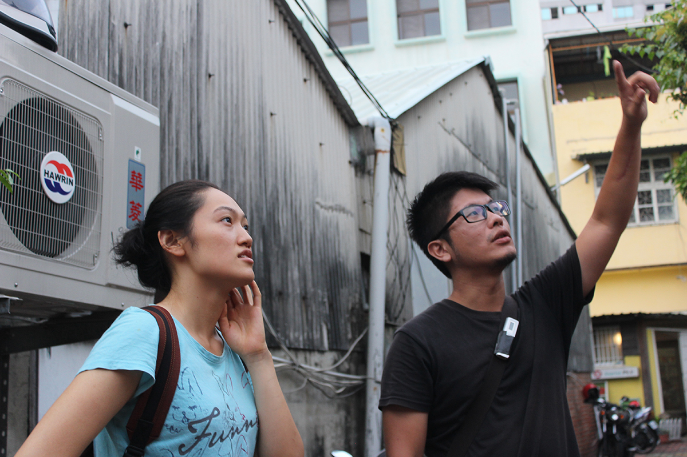
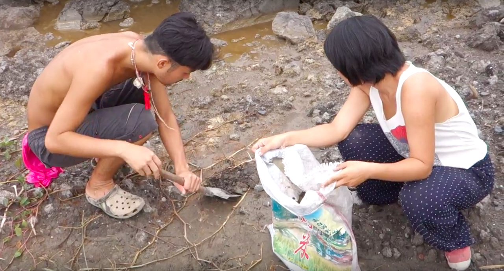
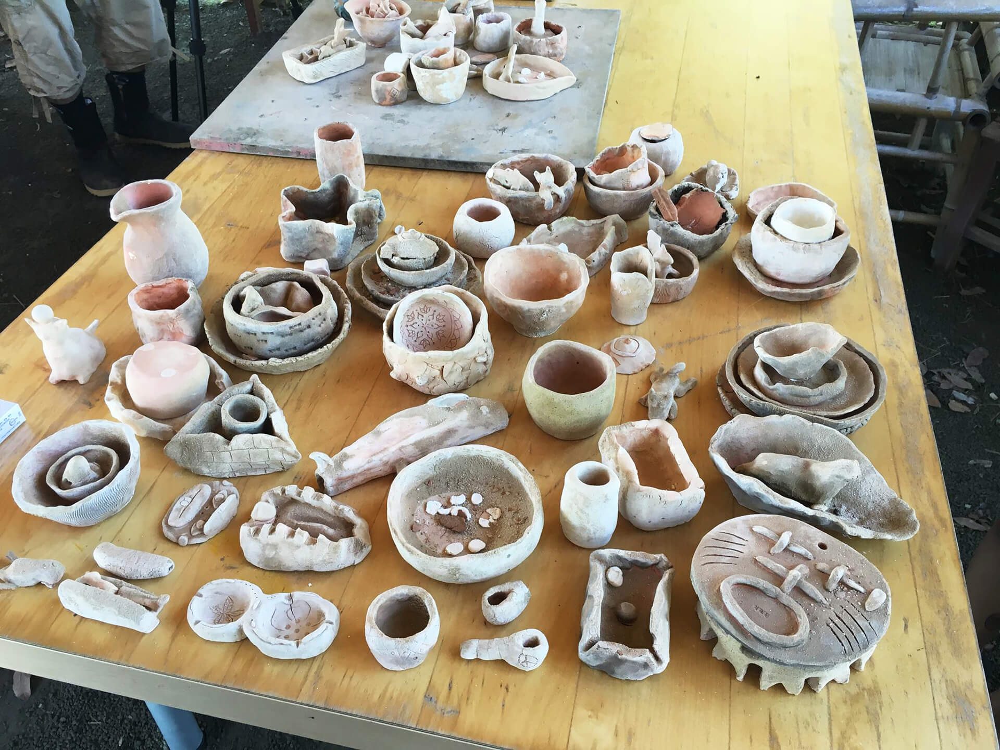
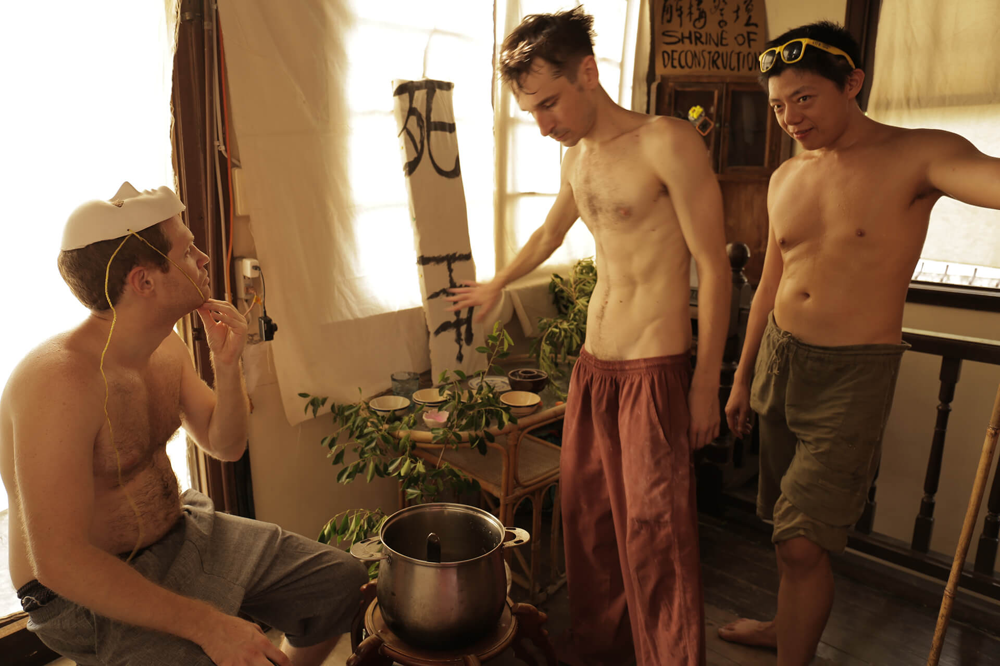
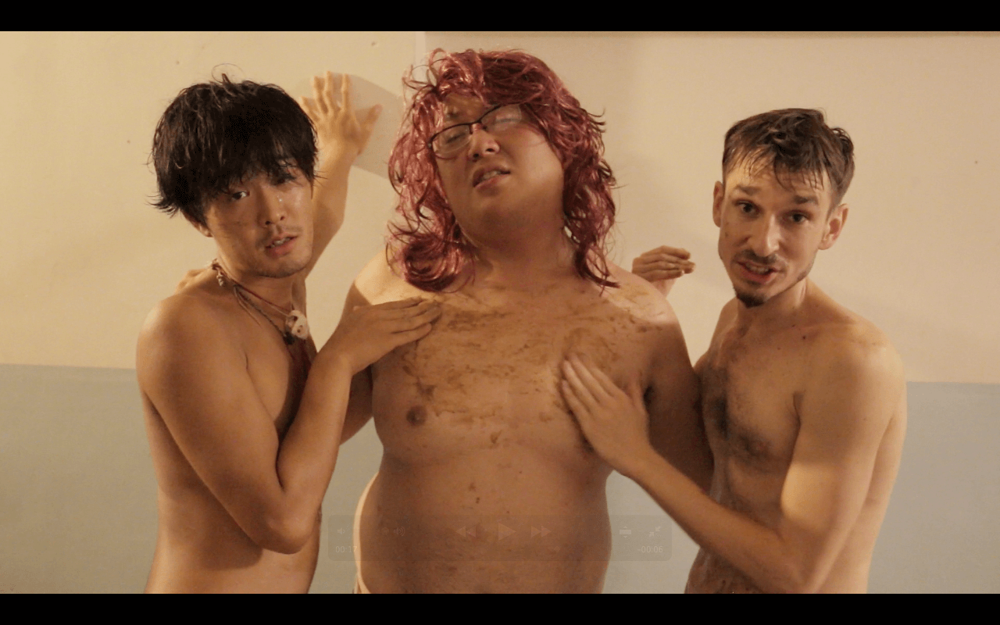
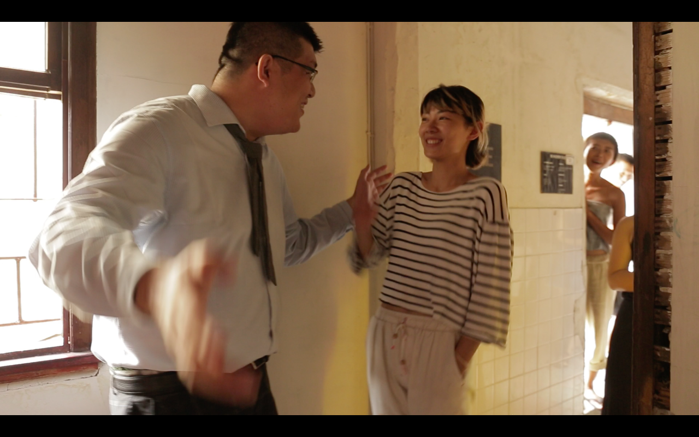
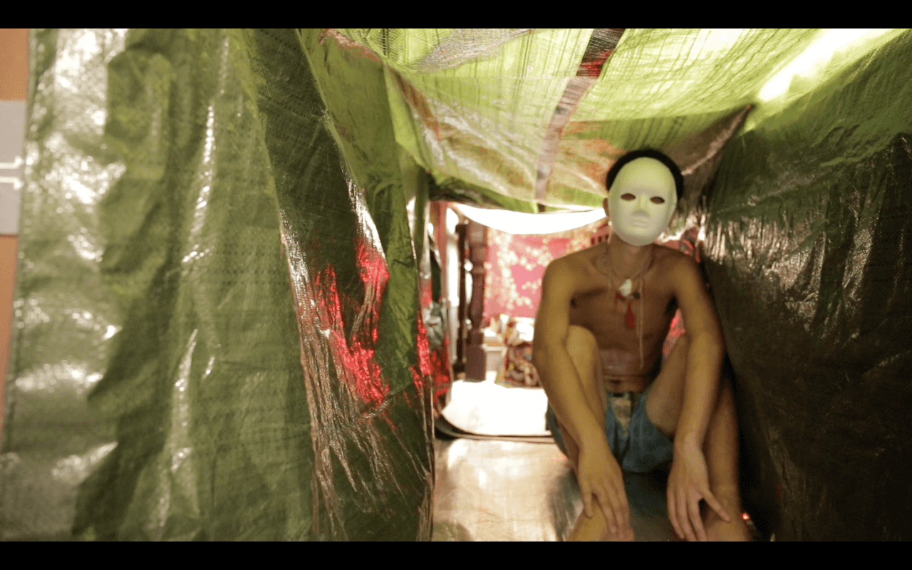
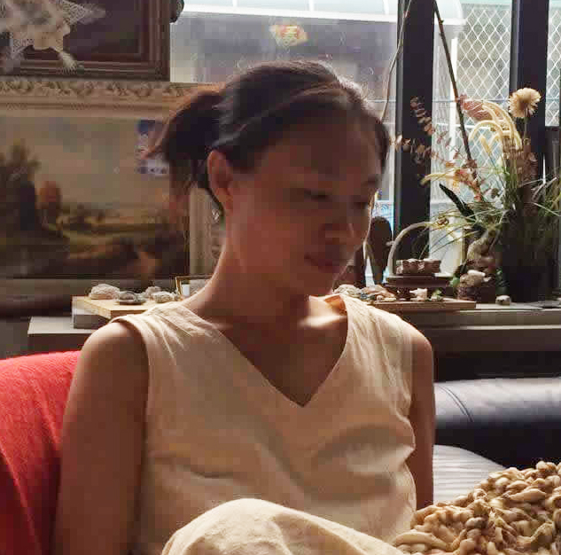

公共科診間
藝術家│李奎壁 Li Kuei-Pi、李珮瑜 Lee Pei-Yu、聶克 Nicholas Coulson
策展人│邱柏廷 Chiu Po-Ting、蔡繡如 Showzoo Tsai
展覽時間│08/06 ～09/04
開幕時間│02:00 pm 08/06
地點│能盛興工廠 一樓展場+二樓和室空間
FB活動頁：https://www.facebook.com/events/1243007109045683/
※開幕表演與工作坊活動︰
│08/06│ 聶克 【洞】 互動裝置及行為表演
│08/11-12 ││08/20-21│ 李珮瑜 互動創作工作坊
策展理念
告別了舊時代，直線地前進與突破再也不可能，事件往往一波未平一波又起，取代原有的節奏。重大議題正往各個角落發展，並在連鎖反應中彼此糾纏。對於投向它們的研究，還有取樣審視的可能嗎；還有把主體從被動回應現實的狀態，扭轉成自我實現的可能嗎？能盛興的成員們把「工廠」的符號，透過自己的實踐，將其內涵轉換以社群實驗空間。在這裡的藝術活動，也不遺餘力地對社群關係進行探問。
此次展覽邀請三位藝術家︰李奎壁、李珮瑜、聶克，分頭以各自的創作，與在地人事物發生互動。不約而同，方法學上的基礎在於，人們選擇視若無睹的，他們將大力提醒其存在。李奎壁企圖用創作整理她跟外婆的關係，親密地書寫一個一生奉獻紡織業的女人，及台灣經濟環境變遷的種種對應，希望無名的勞動終將逐漸被世人看見；李珮瑜以日常之物─碗，進入高污染地區實地操演從材料取得到成品之使用，揭露人的異化事實，試著接合人對物與土地的認知；聶克從社會學研究的背景出發，搭建一組觀眾得以體驗自身順應或批判當前現實的裝置，用四個微型展間，開展一個社會運動行動者的養成歷險。
我們把展間視作診療室，與藝術作品交流就是進行關係診察的過程。正常與病態的分界其實並不存在，只是每個人都有自己面對世界的方式。「我」之中已有他者，所以我作為主體是分裂的；但只要人還是社會的，就得面臨如何形塑「公共」的議題，需要不斷去調控共生的法則，想像社群可以有什麼新的面貌。展覽中三個社會議題相關的藝術計畫，邀請您進入公共性之另類可能的實驗。掛號後會發生什麼火花？我們能否彼此長出相互學習、理解、肯認、共存的新型態？
藝術家簡介

║李奎壁║
1991年生，台灣籍藝術家，目前工作及生活在台北。作品多關注於資本社會中的生產問題，並藉由調動現有的生產關係來彰顯衝突，形式包含了行動、工作坊與裝置。2014年開始的關係工作室計畫中，透過對於不同場所的生產方式的介入，重新連結人與工作中生產的物的關係。


作品：碎花布的殖民史
如果一張布料得以憑藉其花紋，成為解嚴後對於自我認同焦慮的一種身分指認，並且透過國家與文建會一系列的活動重新提出，聯結這個花紋為客家族群的象徵，張顯的不僅是對於族群認識的貧脊，同時也在快速地自我切割與符號化，而這樣的符號化背後隱藏著政府對於文化根源亟欲顯現的權利，而樂於接受的大眾所顯現的則是對於規訓焦慮，只是此時的焦慮不再存在於規訓系統之內，而是對於過往被規訓的經驗。此時的問題不再是因為認識的缺乏所形成的錯誤指認，而是在同一個製造現場出現的東西之中，為什麼我們選擇了這個，而不是另一個？ 在此我們必須回溯部分與紡織業相關的研究文獻，尤其是布料花紋設計的部分，其中大量提及了文建會在80年代末與90年代初在服裝設計上的宣傳活動，與吳清桂的台灣花布圖錄，在花紋的圖像分析多半停留在文化混融的討論上，從圖像裡指出了歐洲新藝術的風格與來自日本的、中國的傳統圖樣，但無法形成問題的是：做為一個產業，這些圖樣的出現原本便與全球流動的商業系統息息相關，選擇這些圖樣或組合這些圖樣並無法直接對其來源提出觀點，在這個困境下，我必須回到「製造」過程來談論意義的製造。 在新遠東紡織的紅花布被命名為「阿嬤的大紅花布」之前，這個圖樣已經被原來製造圖樣的遠東紡織公司停止生產，目前所看到的新遠東紡織其實與遠東紡織公司並沒有實際上的關聯，只是因為使用了遠東紡織的圖樣與生產機械，而沿用了遠東紡織的名稱並且在前方加上了「新」做為區別。而在更早之前，流通在市面上的並不是這類多色印刷的花布，而是僅有兩三色，由紡織廠老闆自行設計的碎花布。這些碎花被印製在極為廉價的布料上，成為當時民生用品常用的布料，直到今日依然有部分民生用品沿用了這樣的設計。
而在這次的駐村地點：能盛興工廠尚還是源發紡織廠時，恰恰經歷了這樣的時代，源發紡織廠的出現與結束同時也與紡織產業的發展相關甚密，有意思的是，源發紡織廠時期的經濟模式與能盛興今日的經濟模式恰成為一個時代價值選擇上的辯證。做為一個發生在(曾經的)紡織工廠之中的展覽，我以外婆的位於新復興實業與統一企業之間的布莊做為出發，試圖創造出一個台南的縱向經濟地圖。
在這次的計畫之中，我選擇了外婆當年經營布莊時，利用碎布料製作的一件碎花兒童上衣，找了台南農改場的花卉研究室負責人為這件上衣上的花卉做品種鑑定，並且請一名花卉育種玩家提出了將現有的花卉品種改良、將這些來源曖昧不清的碎花種出來的方法。在展場之中展示這段品種鑑定與提出種植方法的影片，並且在展場上種植得以作為品種改良根基的花卉。

║李珮瑜║
台南藝術大學材質創作與設計系畢 1993年生與父母一起經歷過經濟榮景與衰敗，面對山與海與土地意識到知識的渺小與必要。大學捏土，現階段創作藉由陶創造人與土地與環境的關係。

互動創作工作坊：
在世界的盡頭有著一座由廢棄物填起來的陸地，生存下來的人類大都住在這塊平坦的地上。
因為貨幣在以後的世界將無用處只剩金銀可以流通，他們挖掘地上的殘物去變賣生活所需；房子是以海邊的漂流木搭建的，油已耗盡，只能踩腳踏車當作交通。遠方以海力為能源運作的高高矗立的煙囪，排出大量新鮮空氣。以後的世界只能借由這隻高高的煙囪去循環氧氣的排放。
我在這裡挖了一兩包土可是沒有掏到金銀財寶︰挖到了原始人的器物，那是碗與杯盤，已知用火燒陶的新石器時代，爐渣石塊都是他們的文明產物，製陶技術高明並在器物上有屬於他們的專屬符號。令人詫異的是史前器皿竟然五顏六色並有著如琉璃般的光亮。 史前世界到底是由什麼有什麼的構成的呢！！！一起來生產人類餘生的文明產物回到未來。

║聶克║
英法混血混領域混媒材。身心靈飄流走在各種框框界線的走鋼絲，決定歡喜過著荒謬而精神分裂的生活狀態。語言，小眾媒體，社會學寫作背景。創作多以探索的精神親身踏入社會議題，再把感受化為故事以影像，表演各種合作來呈現。最近創作探索借用傳統儀式的能量來面對現代性資本主義下所留著的精神失序. 目前撰寫論文，題目專注社會轉型的空間與生活形態運動。

作品：入洞︰一種社運人的旅程與轉化的空間
這件作品，是關於亞洲民主化進程後，為了社會運動的理念與實踐，相繼出現的社運空間。這些反抗跟轉化的空間，得以將運動的目標溶入生活方式及選擇中，並為可能的將來進行實驗。在呼籲各式各樣平等跟環境正義的過程中，他們避開了社會主義黨派政治為建立新社群生活常見的嚴厲手段、遠離人性以及階層化的管理模式，而實行一些無政府精神的方針。這些空間是都市組成裡的洞，以閾限化的場域運作，充滿儀式的通道，使人從生活上成為生命運動者。這次的駐村地點就在其中一個空間─能盛興工廠。去年舉辦了台南第一個彩虹大遊行，並持續推廣綠色製造跟消費以及群體生活的實踐，因此計畫將涉及與這個空間及其營運者互動，並且進行有關分析的經驗。基於試圖誠心地進行而整全地分析社運次文化跟行為的重要性、影響力跟基進潛力，我們必須考量到這些社運人士的人性和心理層面。為什麼個人會選擇外於社會規範，遊走於那些充滿荊棘的危險道路上呢？是什麼引領他們，為這些社群跟理想，貢獻出那麼多的時間跟精力，但往往只有一點點，或近乎完全沒有物質收穫呢？
這個互動性的裝置設定出4個心理學意義上的後設經驗︰一個社運人的旅程始於現代資本主義社會下的社會條件跟動能激發；在身體異化經驗上掙扎，在心理層面上被迫去迎合；解構、淨化與轉化，加上重生的過程，像是一個人在團體的無政府微型實驗以及對可能未來的遠見中，跟理念、生活方式，還有社群的集體目標的追求結婚。
〈無可滿足的象徵性慾望跳樓大拍賣〉呈現了一種社運人旅程的開端。資本主義之現代性，其中勞動生命的分裂、呆板的系統建制、交換價值跟巨大的不平等，對人的心理還有自然環境都造成負擔。多數的都會生活都充斥著破碎又單向思考的勞動經驗，將我們與自己的產物疏離，將人與自然環境隔開。此種現代性的其中一個層面，消費主義透過廣告手法販售象徵欲望，使我們短暫地滿意於不合理的現狀。一個象徵性的欲望/需求就是這麼賣給它的顧客。這個遊戲只能給一點點喘息的機會，可是易於成癮的，它強調那些在你心中仍擁有的，那些象徵性欲望的反面。生命的精力被熊熊花在外力促成的買賣與分心上，令人無從打造親密而長遠的關I係，和透過自己的能力跟創意解決自己的人生處境。
〈異化隧道〉是一段關於身心異化，怪奇、不舒適又要被聲響轟炸的爬行經驗。令人感到不對勁且焦慮的新聞播報，其實跟個體的生活以及整個社群都沒有關係。麻醉且使人分心的聲音告訴我們該如何過自己的生活，將我們推向一種被動的社會存在。迷失在如此外於我們自身經驗跟真理，強烈感覺自身成為他者，人不再是自己命運的主宰，只是一個在機器裡的小齒輪，不跟隨，就面臨淘汰。
〈解構之壇〉是一個閾限空間，把外在強加在身心上的建構給解構，心理的惡魔將被淨化，個體進入一個深刻的轉化經驗，一念之間，面對一種死亡跟一種生命，人在這個腦海清空的狀態可以選擇是否加入團結與改變。達到至關重要的領悟跟抗議的戰意升高，也顯示了社運人旅途的轉折點。 當踏進〈洞房〉舉行結婚儀式時，部份的個人主義死去，而一種集體的生命誕生。隨著有創意、自發性的DIY實踐/實驗，進行各式緊密連結社群的嘗試。追求公平及環境正義價值的時候逐漸融入日常生活。另類生活政治、自我定義的倫理、消費模式跟集體行動，即是為了在資本主義現代性下，進行去異化的具體實踐。將製造跟消費的過程導正，人可能有機會打破此種現代性，並對一個不同的社會進行期許。 請入洞...
策展人介紹

║蔡繡如║
是何許人也？不能固著難以定義。她曾說她是一面鏡，但那個接受面對他自己倒影的人，要小心體內的一些存在將從自我的影像中溜出去，並且可能取代他原來的位子。雨不存在，蔡繡如也可能不存在。如同無人看得見雨，可能也沒有此人存在的任何見證。請你從旁邊經過，或者去躲起來。
║邱柏廷║
天龍國籍/際策展人，於台南能盛興工廠執業，目前正進行駐村藝術家照護的工作。曾數度假借藝術展覽之名，舉辦人類知識的雜交派對，自己則最喜歡人類學跟精神分析的組合，目前正撰寫相關研究論文。身體嬌嫩，沒肉吃會死。